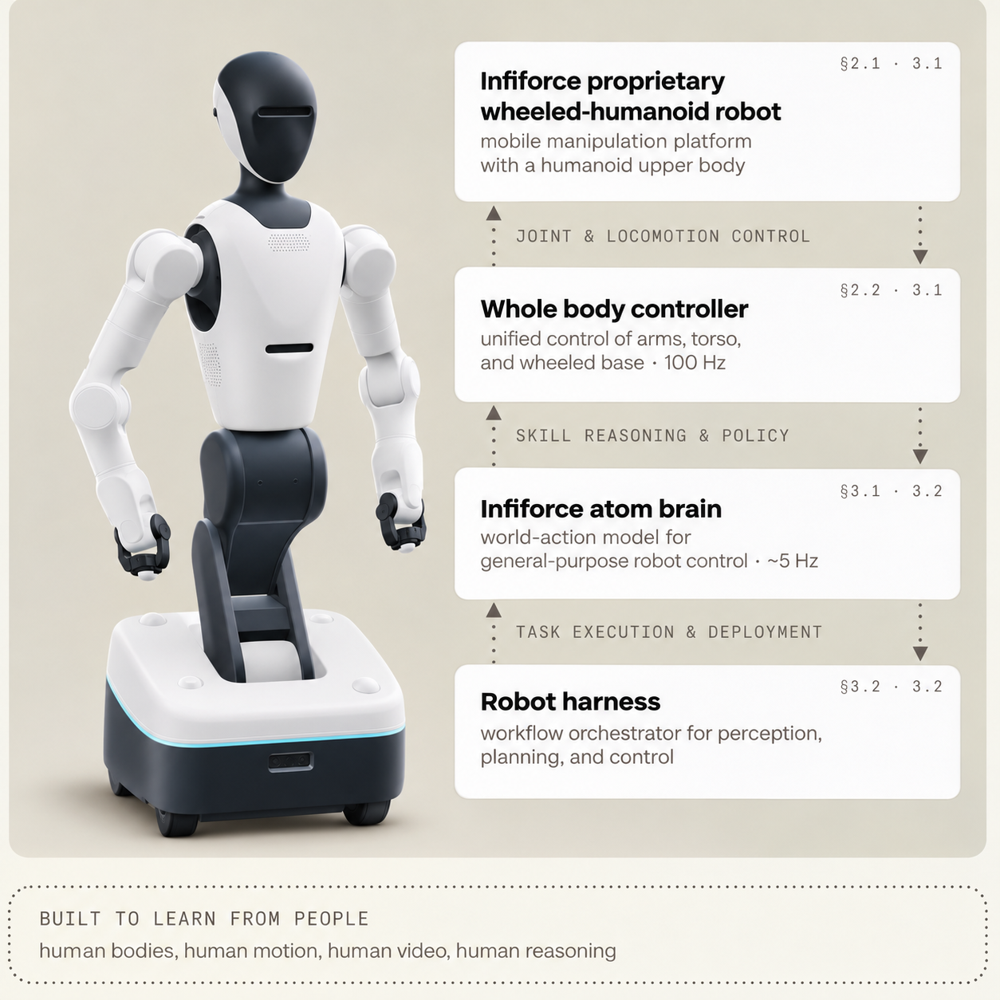
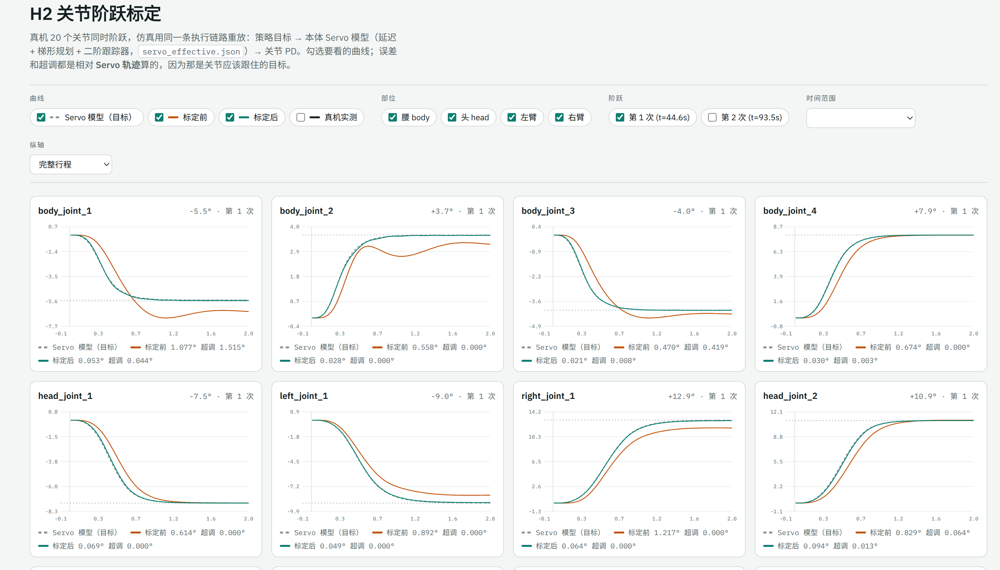

Demo 1
Motion Tracking
我们把连续的人体动作映射到机器人本体，展示 WBC 如何跟踪大脑给出的动作目标。
Introduction
人形机器人跳舞、翻跟斗、打拳的视频，这两年已经很常见。看多了，很多人会有一个印象：机器人的“小脑”已经解决了，剩下的只看“大脑”够不够聪明。
这个印象只对了一半。表演用的小脑确实已经很成熟；可是要让机器人去干活，大脑需要的是另一样东西。行业里把它叫作 WBC（whole-body control，全身控制）。
先交代两个词。本文说的大脑，是理解任务、决定做什么，并且每一刻给出动作目标的模型，比如 VLA（视觉-语言-动作模型：看画面、听指令，直接输出动作）。WBC 是机器人干活时，把大脑这一刻给出的动作目标，实时变成全身每个关节怎么动的那一层。

Demo 1
我们把连续的人体动作映射到机器人本体，展示 WBC 如何跟踪大脑给出的动作目标。
Demo 2
选择一个 SMPL 人体姿态，观察 H2 从起始姿态过渡到目标，并在闭环控制下保持姿态。
Data
视频里渲染了 66 个动作，覆盖 18 个类别。人体和机器人的动作按相同的顺序一一对应。
Model Training
训练使用 59,029 个动作片段，平均每段 12.4 s，合计约 203 h 动作。模型在 4 张 H20 卡上，以约 16,000 个并行仿真环境训练约 18 小时。
我们的算法可以配置不同的底盘类型。对于欠驱动的轮式本体，WBC policy 会通过强化学习学到如何使用可用的自由度。
为了训练闭环稳定的 WBC，我们对 H2 做了 system identification。图中对比了关节阶跃响应在标定前后的差异。
